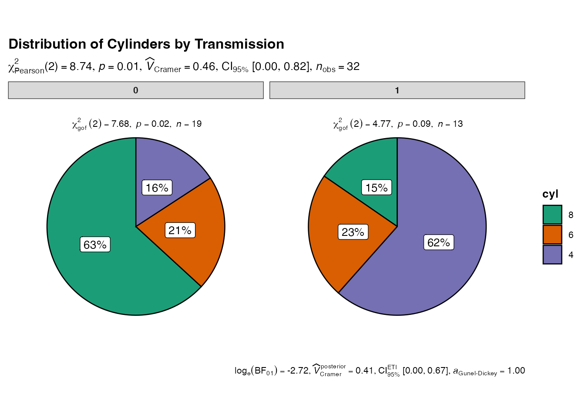

Categorical Plot Functions
Source:vignettes/legacy/09-continuous-comparisons-legacy.Rmd
09-continuous-comparisons-legacy.RmdThis vignette demonstrates the categorical plot functions available in the jjstatsplot package. These functions are designed to work within the jamovi interface, but we can demonstrate their underlying functionality using the ggstatsplot functions they wrap.
Bar charts with jjbarstats()
The jjbarstats() function creates bar charts and
performs chi-squared tests to compare categorical variables. It wraps
ggstatsplot::ggbarstats().
# Underlying function that jjbarstats() wraps
ggstatsplot::ggbarstats(
data = mtcars,
x = cyl,
y = am,
title = "Cylinders by Transmission Type"
)Pie charts with jjpiestats()
The jjpiestats() function creates pie charts for
categorical data visualization. It wraps
ggstatsplot::ggpiestats().
# Underlying function that jjpiestats() wraps
ggstatsplot::ggpiestats(
data = mtcars,
x = cyl,
y = am,
title = "Distribution of Cylinders by Transmission"
)
Dot charts with jjdotplotstats()
The jjdotplotstats() function shows group comparisons
using dot plots. It wraps
ggstatsplot::ggdotplotstats().
# Underlying function that jjdotplotstats() wraps
ggstatsplot::ggdotplotstats(
data = mtcars,
x = hp,
y = vs,
title = "Horsepower by Engine Configuration"
)Within-group comparisons with jjwithinstats()
The jjwithinstats() function compares repeated
measurements within groups. It wraps
ggstatsplot::ggwithinstats().
# Create long format data for within-group comparison
library(tidyr)
mtcars_long <- mtcars %>%
select(mpg, hp, wt, qsec) %>%
mutate(id = row_number()) %>%
pivot_longer(cols = c(mpg, hp, wt, qsec),
names_to = "measure",
values_to = "value") %>%
# Standardize values for comparison
group_by(measure) %>%
mutate(value = scale(value)[,1]) %>%
ungroup()
# Underlying function that jjwithinstats() wraps
ggstatsplot::ggwithinstats(
data = mtcars_long,
x = measure,
y = value,
paired = TRUE,
id = id,
title = "Comparison of Standardized Car Measurements"
)Usage in jamovi
These functions are designed to be used through the jamovi graphical interface, where they provide:
- Interactive parameter selection
- Automatic data type handling
- Integrated results display
- Export capabilities
To use these functions in jamovi:
- Install the jjstatsplot module
- Load your data
- Navigate to the JJStatsPlot menu
- Select the appropriate plot type
- Configure variables and options through the interface
The jamovi interface handles parameter validation, data preprocessing, and result presentation automatically.